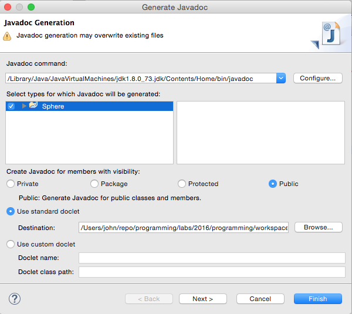
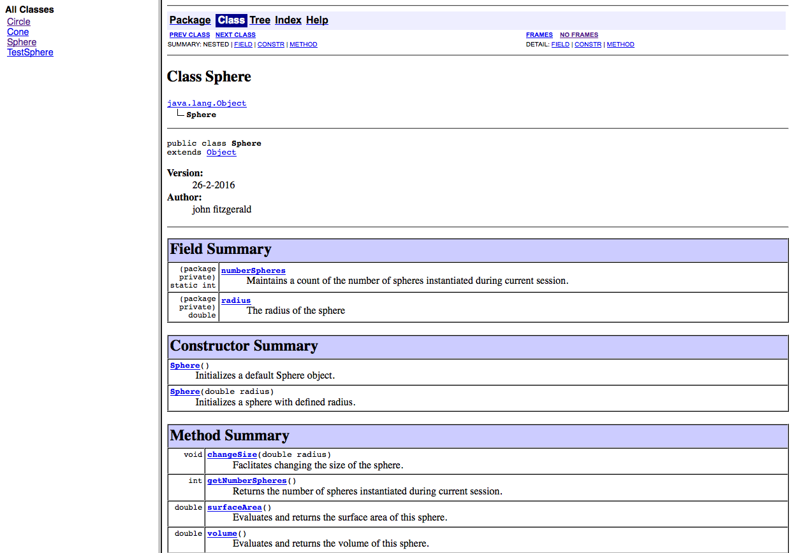
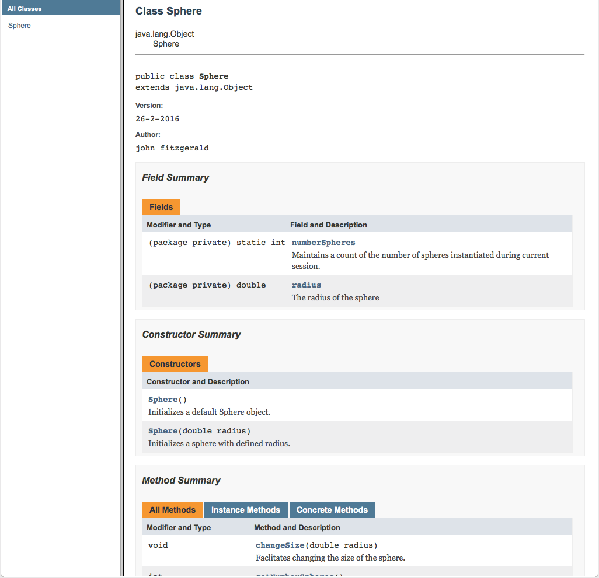

Assignment 1: This is a sample solution set to Assignment 1 which is based on materials contained in the preentations and labs in the first 3 topics, namely, Introduction to Java programming language, Analysis & refactoring class and Object Interaction. There are 4 questions, the first 2 relating to simple class design, the 3rd on the subject of string manipulation and the final one requiring an extension to the BlueJ clock display.
A sample solution for each question is available by clicking on the links below.
The solutions comprise BlueJ projects in which the assignment skeleton code has been completed for each question.
A note regarding documentation
The JavaDoc documentation generating tool included with BlueJ does not facilitate fine-grained configuration.
Here is a link to an online video describing the use of JavaDoc with BlueJ.
Eclipse, which we shall be switching to shortly, provides configuration options as shown in Figure 1.
A Field Summary that includes package private and public fields is generated by default in BlueJ. Fields that are private are not included. See Figure 2.
Whether or not the Field Summary is documented in Eclipse is determined by how JavaDoc is configured. For example, Figure 3 illustrates the situation where private fields and methods are included in the documentation. This might be appropriate for a development team. It would be an easy matter to change the configuration appropriate to a public API.
Although non-standard block tags such as @brief & @file are presented in the sample Cone class, it should be noted that these require special measures if they are to influence JavaDoc output. Otherwise they are ignored in generating documentation. Such customization is beyond the scope of the course. A reference is available here.


